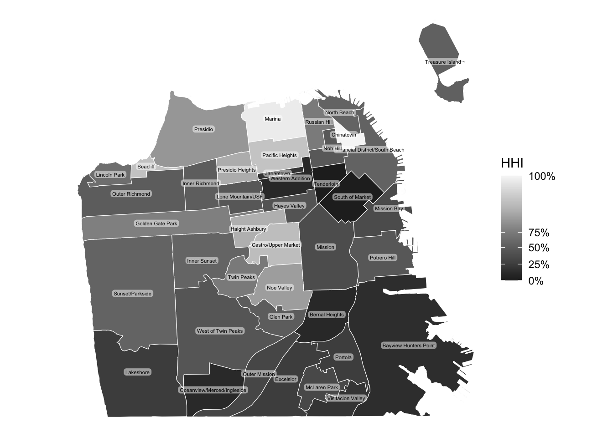

Chapter 2 Emplacing Demographic Data
In this chapter, we will discuss demographic data nested in places, which is often used in sociological research. Sociologists often study where people live and move to. Topics like migration, segregation, gentrification, integration/assimilation, and diversity/fractionalization can be studied using aggregated demographic data for a given geographic unit. To conduct such analysis, defining a geographic unit and boundary suitable for your research question is critical.
2.1 Defining a geographic unit (boundaries)
Geographic units can be defined and drawn at various levels, from nations to cities to neighborhoods. Territories are contested and (re)defined through social processes, therefore, it is important to clearly define and justify your choice of spatial boundary as a unit of analysis. Urban sociologists, for instance, tend to focus on studying neighborhood dynamics. But what are neighborhoods? While government-defined census tracts are often used as a proxy for neighborhoods in quantitative social science research, some scholars choose to analyze other types of boundaries, such as “community areas” that are more meaningful to its residents.
THE CASE OF SAN FRANCISCO
Let’s demonstrate the importance of defining a geographic unit using the case of San Francisco. San Francisco’s neighborhood names and boundaries have changed over time [1] and the current names and boundaries are often inconsistently perceived and administered [2].

Source: SFGATE
In this tutorial, I visualize San Francisco neighborhoods based on census tracts as well as the “Analysis Neighborhood” created by the city officials. Many US city governments provide their local data through Open Data websites, including San Francisco’s DataSF. You want to look for “Geographic Locations & Boundaries” tab.

DataSF is an open data website provided by the city government of San Francisco
Here, you will find the 2010 census tract and “Analysis Neighborhood” boundaries, among many other geographic data.
- Geographic boundaries data can come in various formats, like geojson, shapefiles, etc.
- In this tutorial, we use geojson files. You can download all the data used in this class here.
- Geographic boundaries are “polygons”
- We use sf package in R to handle spatial data.
Set up and import geojson files.
# First, you will have to set up by installing and calling the sf package.
install.packages("sf") #install the package if you haven't.
library(sf)# Import neighborhood boundaries data (polygons)
sfnh <- st_read("tutorial/data/sfnh.geojson") # for "Analysis Neighborhood" boundaries
sftrt <- st_read("tutorial/data/sftrt_clean.geojson") # for census tractsYou can treat these sf objects as if they are data frames.
# Overview of variables
head(sfnh, 3)## Simple feature collection with 3 features and 1 field
## Geometry type: MULTIPOLYGON
## Dimension: XY
## Bounding box: xmin: -122.4761 ymin: 37.70833 xmax: -122.3983 ymax: 37.79037
## Geodetic CRS: WGS 84
## nhood geometry
## 1 Western Addition MULTIPOLYGON (((-122.4214 3...
## 2 West of Twin Peaks MULTIPOLYGON (((-122.461 37...
## 3 Visitacion Valley MULTIPOLYGON (((-122.4039 3...# Transform an sf object into a simple one data frame (without geometries)
sfnh_wo_geo <- st_drop_geometry(sfnh)
head(sfnh_wo_geo, 3)## nhood
## 1 Western Addition
## 2 West of Twin Peaks
## 3 Visitacion ValleyWe can compare how these boundaries differ by mapping them next to each other. In this tutorial, we will use ggplot for mapping.
library(ggplot2)
# Displaying geometry only
sfnh_geo <- ggplot() +
geom_sf(data = sfnh, # add a layer to the plot using spatial data
fill = "grey", # set the fill color of the spatial features
color = "white", # set the color of boundaries
size = 0.5) + # set the thickness of the boundary lines
theme_void() # apply no background
sftrt_geo <- ggplot() +
geom_sf(data = sftrt, fill = "grey", color = "white", size = 0.5) +
theme_void()
# combining maps
ggpubr::ggarrange(sfnh_geo, sftrt_geo, ncol=2,
labels = c("Analysis Neighborhood",
"2010 Census Tract")
) 
In my research, for example, I ask: How do Airbnb hosts use neighborhood names to market their properties? To answer this question, using census tract boundaries doesn’t really make sense because they don’t carry meanings. Rather, it would be more suitable to use boundaries such as Analysis Neighborhood.
THINK AND SHARE
- Are you interested in conducting spatial analysis on nations, cities, regions, or neighborhoods?
- What spatial questions do you have about them?
- How will you define their boundaries?
Want to learn more?
2.2 Joining Attributes
Geographic boundaries alone don’t tell us much about what is social about them. Sociologists, and social scientists more broadly, often are interested in people in these places. Therefore, matching aggregated demographic data with the geographic boundaries is a crucial next step.
We can merge a sf object with a data frame containing demographic attributes using the merge() function. Be careful with the order of the arguments, the returned object will be of the same type as x. It is not possible to do an attribute join using two sf objects.
# Import demographic attributes
sfdem <- read.csv("tutorial/data/sfdem.csv")
# Check common identifier
names(sfdem)## [1] "nhood" "tpop" "pyoung" "pcol" "minc" "mhval"
## [7] "mrent" "pwhite" "pblack" "pasian" "phisp" "tpop17"
## [13] "pyoung17" "pcol17" "minc17" "mhval17" "mrent17" "gentcat"
## [19] "pwhite17" "pblack17" "pasian17" "phisp17" # Yes, in both data sets, "nhood" exists.# Join attributes to geometry
sf_joined <- merge(
x = sfnh, # sf object
y = sfdem, # data frame
by.x = "nhood", # x identifier
by.y = "nhood", # y identifier
all.x = TRUE # keep all lines
)
# Validate geometries
sf_joined <- st_make_valid(sf_joined)Now, we are able to explore neighborhood-level characteristics.
library(dplyr)
# Display population of neighborhoods
sf_joined %>%
select(nhood, tpop)## Simple feature collection with 41 features and 2 fields
## Geometry type: MULTIPOLYGON
## Dimension: XY
## Bounding box: xmin: -122.5149 ymin: 37.70813 xmax: -122.357 ymax: 37.8333
## Geodetic CRS: WGS 84
## First 10 features:
## nhood tpop geometry
## 1 Bayview Hunters Point 34834.88 MULTIPOLYGON (((-122.3816 3...
## 2 Bernal Heights 24952.09 MULTIPOLYGON (((-122.4036 3...
## 3 Castro/Upper Market 20037.68 MULTIPOLYGON (((-122.4263 3...
## 4 Chinatown 14360.00 MULTIPOLYGON (((-122.4067 3...
## 5 Excelsior 37063.83 MULTIPOLYGON (((-122.4246 3...
## 6 Financial District/South Beach 9929.22 MULTIPOLYGON (((-122.3875 3...
## 7 Glen Park 8053.00 MULTIPOLYGON (((-122.4474 3...
## 8 Golden Gate Park 137.00 MULTIPOLYGON (((-122.4426 3...
## 9 Haight Ashbury 17009.00 MULTIPOLYGON (((-122.4321 3...
## 10 Hayes Valley 16915.00 MULTIPOLYGON (((-122.4207 3...# Display the neighborhood named "Mission"
sf_joined %>%
filter(nhood == "Mission")## Simple feature collection with 1 feature and 22 fields
## Geometry type: MULTIPOLYGON
## Dimension: XY
## Bounding box: xmin: -122.4269 ymin: 37.74783 xmax: -122.403 ymax: 37.77564
## Geodetic CRS: WGS 84
## nhood tpop pyoung pcol minc mhval mrent pwhite pblack
## 1 Mission 60202.03 39.93308 33.86769 76201.05 634583.3 1267.62 32.5255 2.973325
## pasian phisp tpop17 pyoung17 pcol17 minc17 mhval17 mrent17
## 1 11.01126 50.07308 58770 34.39923 57.20385 125000.2 1106315 1870.846
## gentcat pwhite17 pblack17 pasian17 phisp17
## 1 gentrifying 41.09069 3.660031 14.46827 35.66786
## geometry
## 1 MULTIPOLYGON (((-122.411 37...# Display the population of "Mission"
sf_joined %>%
filter(nhood == "Mission") %>%
select(tpop)## Simple feature collection with 1 feature and 1 field
## Geometry type: MULTIPOLYGON
## Dimension: XY
## Bounding box: xmin: -122.4269 ymin: 37.74783 xmax: -122.403 ymax: 37.77564
## Geodetic CRS: WGS 84
## tpop geometry
## 1 60202.03 MULTIPOLYGON (((-122.411 37...THINK AND SHARE
Below, you see two maps, each representing Chicago ans Seattle.
- What are the geographic boundaries used in this figure?
- What attribute is displayed in the map?
- Is this attribute quantitative or qualitative?
2.3 Data Visualization
By merging demographic data with spatial boundaries, we can map demographic patterns. When it comes to mapping, it is important to consider what type of variable you intend to display.
- Choropleth map
- Typology map
We can use or construct demographic variables of interest for mapping. Here, we will create two commonly used variables in urban research: diversity and gentrification.
2.3.1 Choroleth map
In social science research, scholars often use the Herfindahl-Hirschman Index (HHI) as a measure for diversity. It is an economic index to measure the size of firms in relation to the industry they are in, but the formula is the same as the Simpson diversity index used in ecology, and can be applied to demographic contexts as well. The formula is:
\[ HHI = \sum_{i=1}^{N} (MS_i)^2 \] Where \(MS_i\) is the market share of firm \(i\) in the market, and \(N\) is the number of firms.
In demographic research, sociologists use the HHI to measure racial diversity of neighborhoods. Instead of market share of firms in a market, we use the shares of racial groups in a neighborhood.
For example, in a neighborhood with 4 racial groups each representing 25%, the HHI would be:
\[ 0.25^2 + 0.25^2 + 0.25^2 + 0.25^2 = 0.25 \]
or, more generally:
\[ HHI = \sum_{i=1}^{4} (0.25)^2 = 0.25 \]
The HHI of 25% means that there is a moderate level of diversity. However, as the HHI goes up, it means the market is more monopolized with less competition, or the neighborhood is predominantly represented by one group.
We can create this diversity measure using the variables we have.
# Create the HHI
sf_joined <- sf_joined %>%
mutate(diversity = (pwhite^2 + pblack^2 + phisp^2 + pasian^2)/100)
# Check
sf_joined %>%
select(diversity)## Simple feature collection with 41 features and 1 field
## Geometry type: MULTIPOLYGON
## Dimension: XY
## Bounding box: xmin: -122.5149 ymin: 37.70813 xmax: -122.357 ymax: 37.8333
## Geodetic CRS: WGS 84
## First 10 features:
## diversity geometry
## 1 30.41952 MULTIPOLYGON (((-122.3816 3...
## 2 29.24377 MULTIPOLYGON (((-122.4036 3...
## 3 60.80993 MULTIPOLYGON (((-122.4263 3...
## 4 72.94796 MULTIPOLYGON (((-122.4067 3...
## 5 33.48204 MULTIPOLYGON (((-122.4246 3...
## 6 42.47888 MULTIPOLYGON (((-122.3875 3...
## 7 41.08415 MULTIPOLYGON (((-122.4474 3...
## 8 48.51617 MULTIPOLYGON (((-122.4426 3...
## 9 57.51691 MULTIPOLYGON (((-122.4321 3...
## 10 39.00489 MULTIPOLYGON (((-122.4207 3...Next, we can create a map displaying how diverse/homogeneous San Francisco neighborhoods are. For relative quantitative variables like the HHI, choroleth maps are useful.
ggplot(data = sf_joined) + # specify the source of spatial data
geom_sf(aes(fill = diversity),
size = 0.2,
color = "white") + # add a layer to use "diversity" to fill colors
scale_fill_distiller(type="seq", # fill in sequential colors
palette = "Greys",
breaks = quantile(sf_joined$diversity), # set breaks at the quantile
direction = -1, # 1 for low (light) to high (dark), -1 for reverse
) +
geom_sf_label(aes(label = nhood), # add labels using the nhood variable
size = 1.5, # size of the label text
color = "black", # color of the text
fill = "white", # background fill color
label.padding = unit(0.1, "lines"), # padding around the text
label.size = 0, # thickness of the border around the label
alpha = 0.5, # set transparency of the background
check_overlap = TRUE) + # suppress overlaping texts
theme_void() +
labs(fill = "HHI") # add a label for legend
- What are the least diverse neighborhoods? Which is the dominant racial group?
- What are the most diverse neighborhoods?
2.3.2 Typology map
We’ve discussed maps suitable for quantitative variables so far. What about for qualitative variables? We use a typology map. We will create a gentrification measure to demonstrate a use case for typology map. Gentrification is a phenomenon that we measure over space and time. While there are multiple ways to define and measure gentrification, for the purposes of this tutorial, we will conceptualize gentrification as a neighborhood-level socioeconomic transformation comprised of both an influx of middle-and upper-class residents and an increase in housing prices in previously low-income, urban neighborhoods.
Our measure of gentrification is calculated at the census tract level from 2000 to 2020, so that we can examine how the socioeconomic composition of neighborhoods in San Francisco changes over time. The four variables listed below are used in our categorical measure of gentrification:
- Median household income (in 2020 Dollars)
- Percent of college-educated residents
- Median home value (in 2020 Dollars)
- Median gross rent (in 2020 Dollars)
The first step in computing the gentrification measure is determining whether or not a tract is eligible to gentrify (i.e., Gentrifiable). Generally, researchers consider tracts eligible to gentrify if they are relatively low-income neighborhoods such that they could undergo the revitalization that characterizes gentrification. We will operationalize eligibility to gentrify in a binary fashion using the median household income.
Not Gentrifiable: Census tracts had a median household income above the city-wide median household income at the start of the period.
Gentrifiable: Census tracts had a median household income below the city-wide median household income at the start of the period.
Next, among the census tracts that were Gentrifiable, we must determine if they were gentrifying over time or not. To classify the gentrifiable tracts as gentrifying or not gentrifying, we will need to calculate how much socioeconomic change and housing value change the tract experienced over the decade and compare the rate of change to the rate in the city.
Gentrifying: Gentrifiable census tracts that had the socioeconomic status of their residents (i.e., % college graduates OR median household income) grow faster than the city wide-median AND the home values (median home value OR median gross rent value) grow faster than the city-wide median over the decade period.
Not Gentrifying: Gentrifiable census tracts that did NOT experience growth in the socioeconomic status of their residents AND their home values at a rate higher than the city-wide median values over the decade period.
This measurement strategy results in a three-category gentrification measure - Not Gentrifiable, Gentrifying, and Not Gentrifying. With these three categories we can make a typology map of census tracts in San Francisco.
# In-class assignment
# 1. Determine the boundaries: Should we use census tract or analysis neighborhood boundaries?
# - Use census tracts.
sftrt_dem <- read.csv("tutorial/data/sftrt_dem.csv")
# Check if it has a common identifier with sftrt
head(sftrt_dem$trt10)## [1] 10100 10200 10300 10400 10500 10600class(sftrt_dem$trt10)## [1] "integer"head(sftrt$tractce10)## [1] "016400" "016100" "015900" "015500" "015300" "015100"class(sftrt$tractce10)## [1] "character"# Fill with leading zeros and convert to string
sftrt_dem <- sftrt_dem %>%
mutate(tractce10 = as.character(sprintf("%06d", trt10)))
# 2. Join demographic data to geometric boundaries
# use either "sfdem.csv" (analysis) or "sftrt_dem.csv" (census tract)
sftrt_joined <- merge(
x = sftrt, # sf object
y = sftrt_dem, # data frame
by.x = "tractce10", # x identifier
by.y = "tractce10", # y identifier
all.x = TRUE, # keep all lines
)# Create a typology map
ggplot(data = sftrt_joined) +
geom_sf(aes(fill = gentcat),
size = 0.02,
color = "white") +
scale_fill_manual(values = c("non-gentrifiable" = "light grey",
"gentrifying" = "pink",
"non-gentrifying" = "black")) +
theme_void() + # minimalist theme, but keeping the legend
# customize the legend title and position
labs(fill = "Gentrification Category",
title = "Gentrification in San Francisco") +
# customize legend position and map layout (optional)
theme(legend.position = "right") # You can also use "bottom" or "left")
Data sources
Aggregated demographic data and spatial boundaries are collected and disseminated by national and municipal government, as well as international organizations (e.g., United Nations).
https://rcarto.github.io/geomatique_avec_r/2001_donnees.html